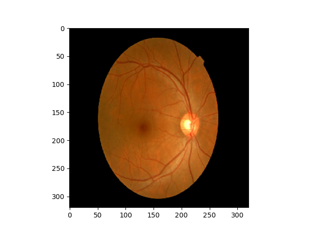
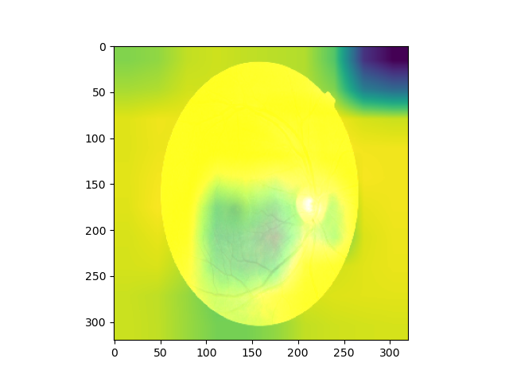

Patient: John Doe
Gender: Male
Actual Image
Models view of Image
Diagnosis: No signs of
The analysis is consistent with No signs of diabetic retinopathy detected, with a confidence of 100.00%. Regular screening is recommended to monitor changes.The Models view of image shows the areas of the actual image that the model used, to come up with the aforementioned prognosis.